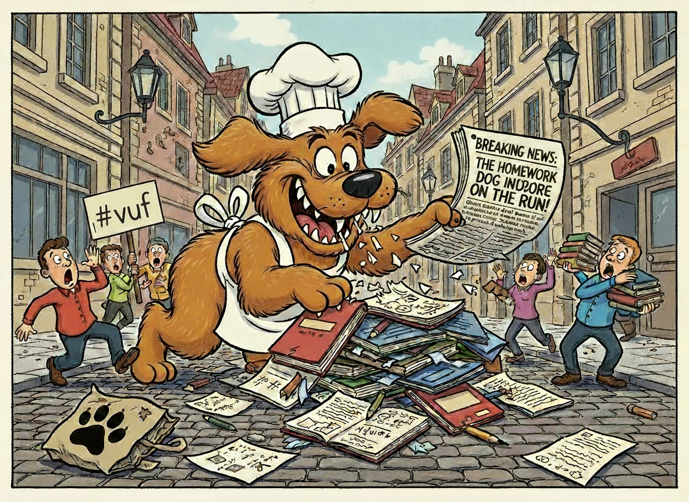
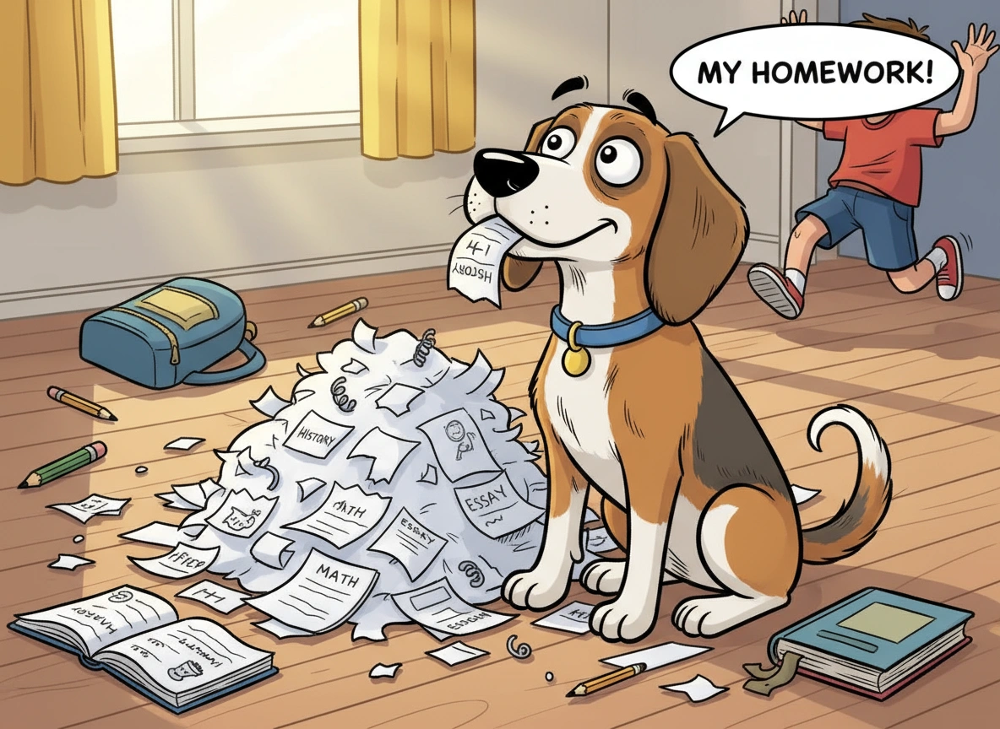

FÅ HJÆLP
Få inspiration til gode undskylninger og mulige resultater, samt hvilken effekt de kan have ...
Se mereLektie-hunden har nu sat poterne på dansk jord
Få inspiration til gode undskylninger og mulige resultater, samt hvilken effekt de kan have ...
Se mereSkriv endelig ind med alle dine tidligere erfaringer af gode råd og hjælp andre!
Se mereFlere danskere melder ind at de har set lektie-hunden rende rundt i gaderne.
København, 12. november 2025
En mystisk hund, kendt som “lektie-hunden”, terroriserer nu danske elever. Flere vidner har set den firebenede skræmmel løbe gennem gaderne – altid på jagt efter ubevogtede skoletasker.
14-årige Emma fra Aarhus er en af de mange, der har mødt lektie-hunden ansigt til ansigt. “Jeg troede først, det var en almindelig hund, men så så jeg, hvordan den kiggede på mine lektier. Pludselig var de væk!” fortæller hun.
Politiet opfordrer alle elever til at være ekstra forsigtige. “Lad ikke dine lektier ligge fremme, og hold øje med mistænkelige hunde i nærheden af skoler og biblioteker,” siger en talsmand. Hvis du ser lektie-hunden, bedes du straks kontakte de lokale myndigheder – eller gemme dine lektier et sikkert sted.
Forskere mener at flere vil blive ramt af den sultne lektie-spiser!
København, 12. november 2025
“Vores data viser, at hunden har en klar præference for bestemte fag. Den er blevet observeret i nærheden af gymnasier og folkeskoler, hvor den opsøger elever med ufærdige opgaver,” forklarer professor Lars Jensen.
Forskerne anbefaler, at elever tager forbehold: “Lav dine lektier i god tid, og gem dem et sikkert sted. Hunden er ikke kun en myte – den er reel, og den er på jagt efter dine bedste ideer.” En kilde tæt på sagen advarer også mod at fodre hunden med dårlige undskyldninger. “Den kan lugte en dårlig undskyldning på lang afstand.”
Mange influencere er gået sammen i kampen mod lektie-hunden. Vis din støtte med på de sociale medier. Sammen står vi stærkere #VUF
København, 12. november 2025
Danske influencere har taget kampen op mod den frygtede lektie-hund. Under hashtagget #VUF (Vi Uddanner os Frem) deler de tips, tricks og personlige historier om, hvordan man undgår at blive ramt.
Den populære tiktoker @LektieLiv er en af dem, der har taget kampen op. “Jeg mistede engang en hel uges lektier til den hund. Det var en hård lektie at lære – bogstaveligt talt,” fortæller hun.
Flere kendte profiler har startet en landsdækkende kampagne, hvor de opfordrer til at gemme lektier i låste skabe, bruge kodeord på dokumenter og aldrig efterlade skoletasker uden opsyn. “Sammen står vi stærkere. Lad os vise lektie-hunden, at vi ikke lader os skræmme,” lyder det fra @StudieSøster, der har startet en opfordring, hvor elever deler billeder af deres sikrede lektier med #VUF.